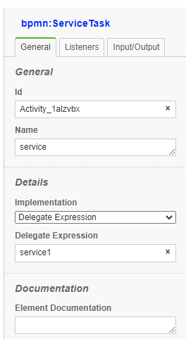
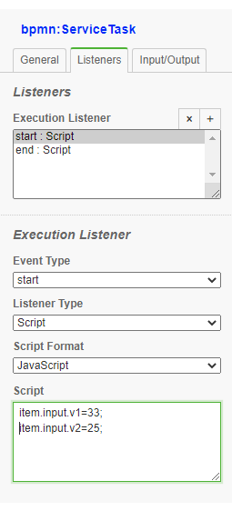

Features by Examples#
Service Task#
In Process definition (.bpmn file), use implementation attribute to define name of JavaScript/TypeScript Method to perform the Task:

<bpmn:serviceTask id="serviceTask" name="Service Task" implementation="service1">
...
</bpmn:serviceTask>
class AppServices {
async service1(item,input) {
seq++;
await delay(3000 -(seq * 100) , 'test');
item.log("SERVICE 1" + item.token.currentNode.id);
}
}
Script Task#
<bpmn2:scriptTask id="Activity_06typtl" name="script" scriptFormat="JavaScript">
<bpmn2:script>
this.log('testing from <testing> the inside: '+data.loopKey);
</bpmn2:script>
..
</bpmn2:scriptTask>
Conditional Flow#
<bpmn:sequenceFlow>
<bpmn:conditionExpression xsi:type="bpmn:tFormalExpression" language="JavaScript">
(data.needsCleaning=="Yes")
</bpmn:conditionExpression>
..
Form Input Fields#
<bpmn:userTask id="task_Buy" name="Buy">
<bpmn:extensionElements>
<camunda:formData>
<camunda:formField id="needsRepairs" label="Repairs Required?" type="boolean" />
<camunda:formField id="needsCleaning" label="Cleaning Required?" type="boolean" />
</camunda:formData>
</bpmn:extensionElements>
...
</bpmn:userTask>
Multiple Start Event#
When a definition/process has multiple start node, you need to specify the start node when starting the process:
From the Web UI:

From API:
response = await api.engine.start('invoice',
{ reminderCounter: 0, caseId: caseId}, user, {startNodeId:'StartEvent_AP'});
Business Rule Task#
BPMN-Server supports Business Rules implemented through DMN-Engine Business Rules can be defined as a Decision Table as in this example:
Decision Table is called through
This will load the file 'Vacation.json' form the Processes folder as defined in configuration.jsScript Extensions#
Scripts can be added to listen to two events: - Start before the Task is executed - End after the task is executed

In this example we are adding a script to bpmn:startEvent
<bpmn2:extensionElements>
<camunda:executionListener event="start">
<camunda:script scriptFormat="JavaScript">
console.log("This is the start event");
data.records=[1,2,3];
console.log(data);
</camunda:script>
</camunda:executionListener>
<camunda:executionListener event="end">
<camunda:script scriptFormat="JavaScript">
console.log("This is the end event");
</camunda:script>
</camunda:executionListener>
</bpmn2:extensionElements>
Timer Event#

<bpmn:intermediateCatchEvent id="Event_timer">
<bpmn:incoming>Flow_1sg7v2d</bpmn:incoming>
<bpmn:outgoing>Flow_1nku8og</bpmn:outgoing>
<bpmn:timerEventDefinition id="TimerEventDefinition_07xu06a">
<bpmn:timeDuration xsi:type="bpmn:tExpression">PT2S</bpmn:timeDuration>
</bpmn:timerEventDefinition>
</bpmn:intermediateCatchEvent>
Multi-instances Tasks#

<bpmn:scriptTask id="scriptTask" name="Script Task">
<bpmn:incoming>Flow_159xzcz</bpmn:incoming>
<bpmn:outgoing>Flow_0t7z2os</bpmn:outgoing>
<bpmn:multiInstanceLoopCharacteristics isSequential="true"
camunda:collection="$(data.records)" />
<bpmn:script><![CDATA[this.log('testing from the inside: '+data.loopKey);]]></bpmn:script>
</bpmn:scriptTask>
Call Process#
<bpmn:callActivity id="activity_call" name="Call Task" calledElement="loop">
...
</bpmn:callActivity>
Throwing and Cathcing Messages#
In this example, we will demonstrate how can two seperate processes communicate through "Messages"

1 Throw a message with data#
When a process throw a message, bpmn-server checks if there is another process that can catch this message before dispatching it to AppDelegate.
<bpmn2:intermediateThrowEvent id="throw_msg1" name="msg1">
<bpmn2:messageEventDefinition id="messageEventDef1" messageRef="Msg1" />
<bpmn2:extensionElements>
<camunda:script event="start"><![CDATA[
input.caseId= data.caseId;
this.messageMatchingKey={'data.caseId': data.caseId };
]]></camunda:script>
</bpmn2:extensionElements>
...
</bpmn2:intermediateThrowEvent>
Msg1
- Message Output: caseId: <someValue>
2 Catch a message with data#
The second process defines a start event to catch the message Msg1
<bpmn2:startEvent id="StartEvent_1w66wpl" name="msg1">
...
<bpmn2:messageEventDefinition id="messageEventDef4" messageRef="Msg1" />
</bpmn2:startEvent>
3 Throw a message with data and a Key#
In addition, the second process sends a confirmation message Confirm1 to the first process
<bpmn2:intermediateThrowEvent id="throw_confirm1" name="confirm1">
<bpmn2:messageEventDefinition id="messageEventDef2" messageRef="Confirm1" />
<bpmn2:extensionElements>
<camunda:script event="transformOutput"><![CDATA[
this.output.confirm=true;
this.context.messageMatchingKey={'data.caseId': this.token.data.caseId };
]]></camunda:script>
</bpmn2:extensionElements>
...
</bpmn2:intermediateThrowEvent>
Howerver, the challenge here is that make sure the message is sent to the specific instance, that is where the Matching key is used
- Message Id: Confirm1
- Message Output: confirm: true
- Message Matching Keyt: 'data.caseId': this.token.data.caseId